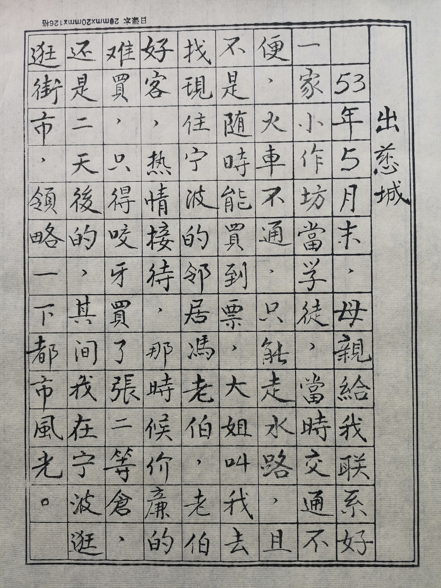
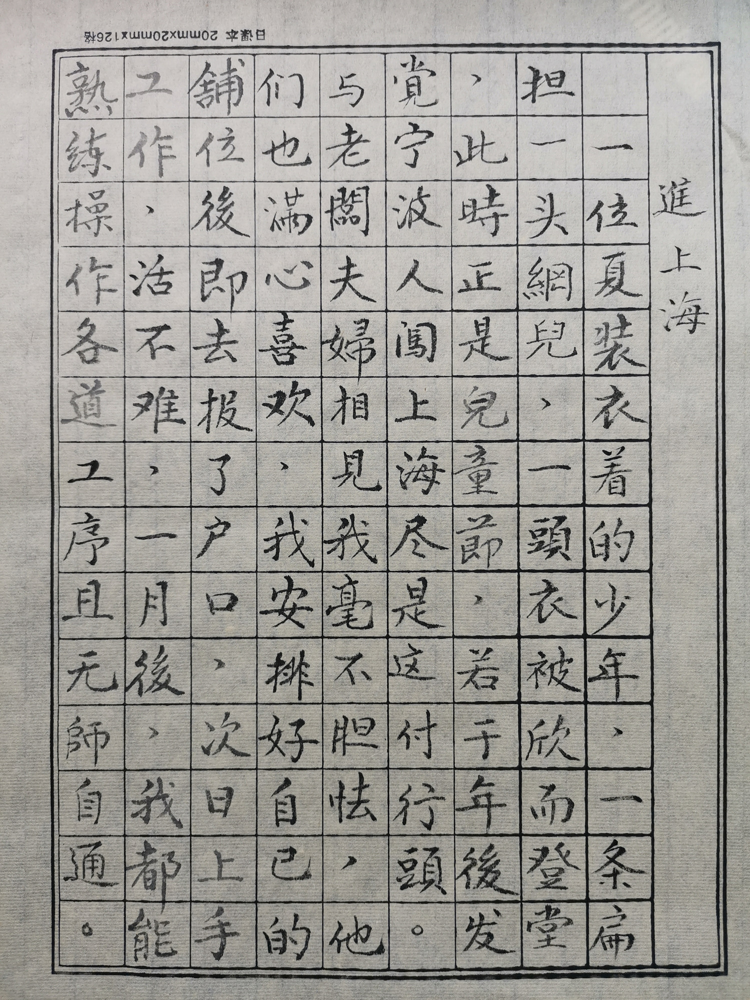
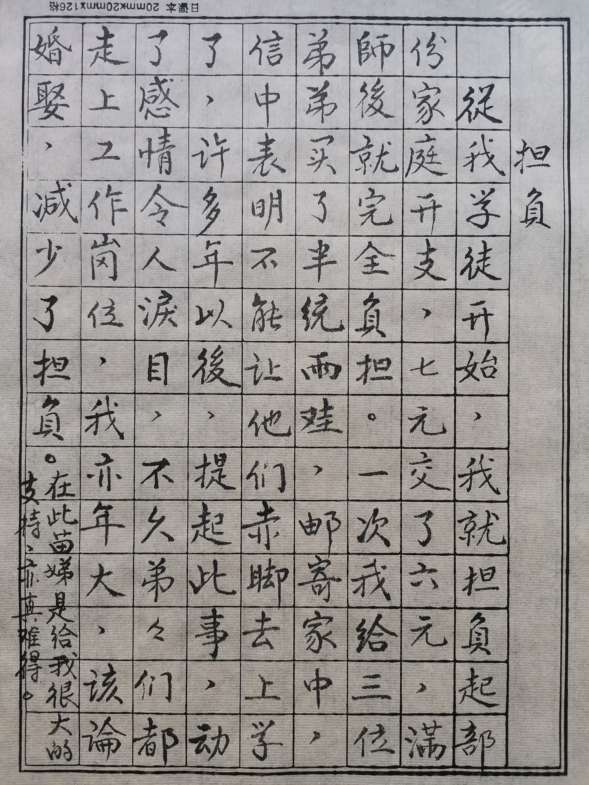
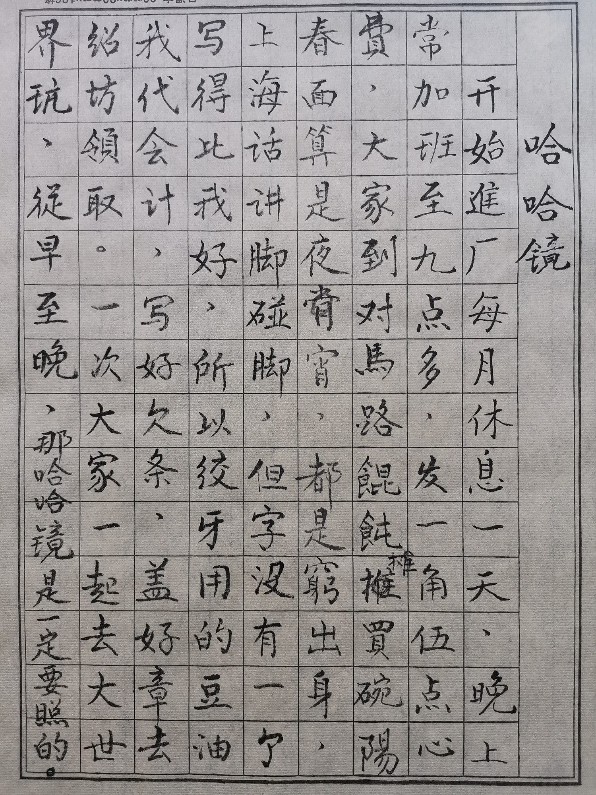
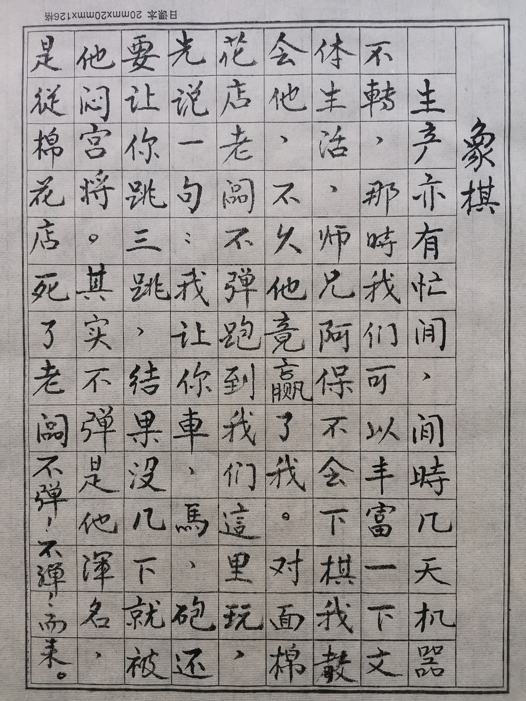
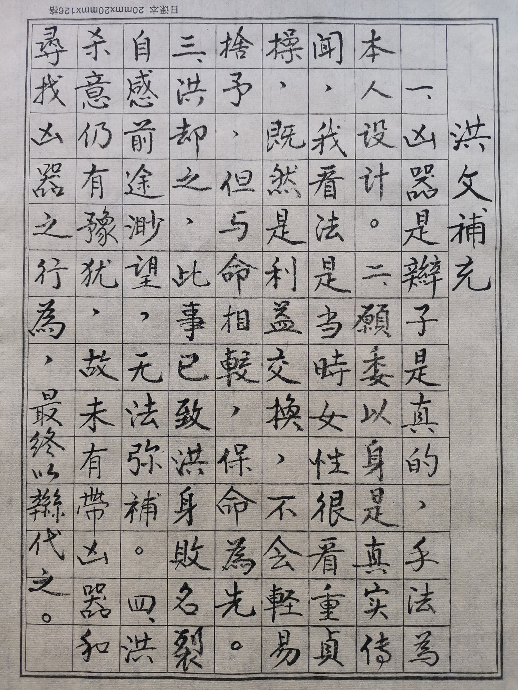

出慈城
①出慈城
53年5月末，母亲给我联系好一家小作坊当学徒，当时交通不便，火车不通，只能走水路，且不是随时能买到票，大姐叫我去找现住宁波的邻居冯老伯，老伯好客，热情接待，那时候价廉的难买，只得咬牙买了张二等仓，还是二天后的，其间我在宁波逛逛街市，领略一下都市风光。
②进上海
一位夏装衣着的少年，一条扁担，一头网兜一头衣被，欣然登堂。此时正是儿童节，若干年后发现宁波人闯上海尽是这付行头。与老板夫妇相见我毫不胆怯，他们也是满心喜欢，我安排好自己的铺位后即去报了户口，次日上手工作，活不难，一个月后，我都能熟练操作各道工序且无师自通。
③月规钿
这个词大家很陌生吧？那是老板给学徒的零用钱，开始每月7元，六个月后，每月14元，一年后21元，估计前面几位师兄可能不是这样，故而有些忌恨，后来二位师弟也不是这样的对待。看来对我是青眼有加，中午老板与我们同桌用膳，刚好八人，老板要添饭时把碗推向师兄，而不是后进的我。
④负担
从我学徒开始，我就担负起部分家庭开支，七元交了六元，满师后就完全负担。一次我给三位弟弟买了半统雨鞋，邮寄家中，信中表明不能让他们赤脚去上学了，许多年后，提起此事，动了感情令人泪目，不久弟弟们都走上工作岗位，我亦年大，该论婚娶，减少了负担。在此苗娣是给我很大的支持，亦真难得。
⑤哈哈镜
开始进厂每月休息一天，晚上常加班至九点多，发一角五分点心费，大家到对面马路馄饨摊买碗阳春面算是夜宵，都是穷出身，上海话讲脚碰脚，但字没有一个写得比我好，所以绞牙用的豆油我代会计，写好欠条，盖好章去绍坊(油酱店)领取。一次大家一起去大世界玩，从早至晚，那哈哈镜是一定要照的。
⑥象棋
生产亦有忙闲，闲时几天机器不转，那时我们可以丰富一下文体生活，师兄阿保不会下棋，我教会他，不久他竟赢了我。对面棉花店老板“不弹”跑到我们这里玩，先说一句：我让你车，马，砲，还要让你跳三跳，结果没几下就被他闷宫将。其实“不弹”是他诨名，是从棉花店死了老板，不弹!不弹!而来。
⑦篮球
这学徒生活并不枯燥乏味。令人振奋的还可随时打篮球，这在寸金地的上海是很难得的。让我先介绍下周边环境，此为朝北单边弄，右边是隔壁里弄的房子，过街楼向左是我厂，紧挨着三个街面房，与之间距后一幢西式公寓楼房，再进去是一片宽敞的空地，也不知是谁在这里竖了一付篮球架。这条弄房少，亦无名称牌号，有人曾称它为三区，大概为社区所有吧。公寓里住的人不多，未见与外为邻，有位自行车厂热处理工程师系日本人，娶了个宁波人的妻子，都已年过中年，那年妻子疯了，成天的梁兄啊！梁兄。原来日本政府要他的子民回国，却不能携带老婆，这不是要急疯人嘛！那里还住着位修养的解放军。
偏僻而冷清的弄堂因球而变得热闹喧哗，我们是常客，社会上来了不少人，小阿飞只是穿着超前，父亲开了家华侨化工厂，人不高，球艺不错，印尼华侨，曾是澄衷校队。我们常临搭班子进行比赛，多数是玩半场制。有次我一天参加四场赛，其中一场去了海军营房，那胜负当然是可想而知。二年半的学徒生涯，我打了三年球。
⑧洪同志
假动作投篮然后翻身真攻，球擦板而进，这是我满意之作。好了洪同志要来了！他是这里的片警，厂里共六，七个人，连一个公会会员也没有。他召集我们开个会，俨然领导姿态，好像人家并不买帐，他心中很不高兴，会议记录是我，所以不满的话与我说。估计我不在他怨恨之列。洪所辖地有近30个社会青年，大都是应届初中，那年国家经济不是最好，厂里开工不足还欠薪，窥一斑能见全豹，那些人一时是无法消化的，任其漂泊，影响治安，洪就组织他们学习。旁边弄堂几幢石库门相连的士林小学是他们的活动场所，反正厂里停工叫我亦参与其间，年龄倒也相仿，而经历却大不相同，很难融合。在洪同志带领下他们如期完成学业，其中也有被安排工矿企业的，大部分都去了新疆，大新菜馆的小开就是其中一员，听说当了一名教师，算是幸运儿了。此外还有那些20开外的待业者，没有组织他们学习，以女性为主，前期国家建设男性大都安置。彼时片警权力不小，成了近水楼台，当时未婚的洪同志，甚至对象未处。
洪的结局是枪毙！社区待业的姑娘辫子长啊！两只眼睛真漂亮。人我未见过，只是臆想，难不成姓洪的会把丑娘当成西施？听苗娣讲英娣的辫子很漂亮，路人欲以500元购之，这英娣来串门时我倒见过。想必洪把他那位的工作落实得相当完美，他已把她当做自己的另一半，但是以利益交换的婚姻能成功吗？案情复杂，明日请早。
洪门不幸正当枯庙独一根冉冉升起彩旗时，忽然间晴天霹雳，狂风大作使致夭折。那姑娘进单位后眼界大开，反悔既定意愿，始冷淡，遂提分手，然藕欲断丝尚连着，总得商谈分合，一次小木船夜游浦江，洪欲掀翻以死相胁，岂知那女的分意已决并无所畏，并于次日报警，其实洪意在威吓，不在同归，因为他的命也是命，其结果换来一个月的禁闭。那禁闭使洪大失面子，心中好生气恼，顿生报复之念，买了一瓶白酒，在陆稿荐买了包猪头肉。这上海滩随处都有陆稿荐，几乎成了熟食店的代名词，当年铁拐李进了一家叫陆稿荐的熟食(当时仅此一家)店，店主好生款待，临别铁拐李在他的灶肚里塞了一把草，那锅中之食无比异香，于是遍地陆稿荐应运而生。诗云：此地热闹群英集，为觅凶器广思益，子丑卯寅已渐露，凶器依然杳无踪。谁会想到在姑娘身上。洪和她相处已有时日，欲进欲出已视己家，那时大家都无上锁之习，姑娘家住房还算宽绰，洪径直走上三层阁姑娘闺房，女孩还未下班，洪就闷恨地白酒下着猪头肉，彼时三勿精的猪头肉为贱货，现在倒过来了。那女的下班回来了，在洪的面前是一位高挑颀长且冰肤玉肌，流盼神奕的女子，洪自赞有眼光但又觉着看走了眼，那么快地变了心，出手又那么狠，这一个月苦啊！男的凶相毕露，女的心中打怵，看来今天在劫难逃，想委身求好，洪却之。继而二手分抓二条辫子在颈前交叉，又翻转至颈后交叉，勒之窒息而亡。
洪文补充
一.凶器是辫子是真的，手法为本人设计。二.愿委身是真实传闻，我看法是当时女性很看重贞操，既然是利益交换，不会轻易舍予，但与命相较，保命为先。三.洪却之，此事已致洪身败名裂，自感前途渺茫，无法弥补。四.洪杀意任有犹豫，故未有带凶器和寻找凶器之行为，最终以辫代之。
⑨阎罗王
标题醒目，刚刚枪毙了一个，又跑来个阎罗王，不免太恐怖了吧！国家逐步走上计划经济，这螺丝开始由五金公司经销，为了把好质量关，五金公司派员验收，该大员姓阎，因把关较严，背地里我们称他为阎罗王。那地府里阎王只是阴曹里一个官员称谓，大家都以为是佛教，其实非也。阎的检测器具有通规，止规，牙齿角尺，游标卡尺，后来还有了分厘卡，一般一根头发为8丝，直径控制在+-5丝，开始是瑞士进口，后来老大哥亦有，价钿便宜多了,后来156项(苏联援建的156个项目)也有刃具量具项目，那就是国产了。检测完毕，签完单，装上木箱钉实刷唛头，这活对我来讲易如反掌，不就是开一只信封那样简单吗？
⑩二尺半
七十年代我们住在棚户区，一天苗娣指着一位女的说：此人就是二尺半。我未见过矮，足见贬义明显。时间回复二十年前，老板买进一台旧车床，一般最小车床是四尺，而它只有二尺半，居然随时都可适应加工螺丝的各道工序，只要把皮带挂上天轴即可运行，是我车工的启蒙者。
这车床本属闲置设备，也没规定归谁使用，先是惠泉师父操弄几下，我在旁用心观摩，他这人很专研，虽未对机床有过正真的接触，但长者见多识广些，摸着石头过河倒也顺畅，他还告诉我这是英制车床，若要车公制螺纹就要127搭桥，我立即明白了这是一英寸是2.54厘米的关系，他还告诉我如何使用乱扣盘。绞牙用的刃具我们叫豆腐干牙，唐山路保定路转角一家叫仁一工具厂，唐山路安国路一家叫工力，还有我看到钢印上有中字的，据说在南市，其实都差不多，没必要舍近就远。不知什么时候起需用时我就去这二家挂账领取，故而对用材及制作过程略知一二，用材是合金工具钢，又听说是炮弹钢，后来我在马路上买过用此钢做过的刀。一般菜刀只是刀口用钢，而重庆人买的菜刀通体都是炮弹钢且锋利无比，重庆盛产炮弹钢，个中原由无需细述。现在把时间拉到45年之夏，美机轰炸唐山路五中心，把炸弹落在颐乐里，刚十岁出头的二姐不幸遇难，苗娣背上弹片擦过所幸伤势轻微，蓖麻林里有不少尸体，其景惨不忍睹。现在我要回来细述那台二尺半的小车床。这小车床除我和惠泉师父操弄外别无他人，厂小不用物料仓储等功能，刚好现成有高速钢元，我就用它车制成丝攻，没有铣槽功能就学惠泉师父用手推动导轨，把五条槽的丝攻做成，这是我见到工力厂王师父用的丝攻，如果是四槽，正好陷落其中，至于热处理我已能掌握，而且优质钢材反而易于掌控，牙齿可以二次修复使用。那大概是55年的时候，中午杨妈做了馒头，当时吃馒头好比吃蛋糕很是稀罕。中午老板的大女儿(大家都叫她大眼睛)一进门就大声叫问：阿三馒头吃过勿？惠泉师父接上去说：勿会忘记阿三的。时过境迁近七十载，隐约地悟出我的待遇比别人优厚点，哪怕就这一丁点也是不容易的，说明自己工作不错，为人品行也是肯定的。
⑪公私合营
大概是56年吧，私企改造成公私合营，清产核资后资产就不归私人所有，国家实行的是20年赎买政策，凡侵犯资产者属于犯法，对马路自力厂蔡士富就为了虚报差旅费送去劳改，我们店堂里挂着一幅慎昌兴螺丝厂营业执照，注册资金三千万，看官一定以为这个厂规模不小啊！其实这是新旧人民币面值不同，当时更替是一比一百，折算新币也就三千元，老板也是学徒出身，学的是电工，开这个厂也只是温饱稍强点罢了，奔小康还差一段，妻子生育都不去医院而是叫一个日本产婆来家，其中夭折了几个。本人认为合营对他们是有利的，夫妻二人工资不低，旱涝保收，不用担心生意清淡，人倒交关(上海方言：许多)。合营后力力螺丝厂是中心厂要调我去一家叫快乐丰的卫星厂去工作，听说有叫夫妻老婆店的，没有见过有夫妻老婆厂的吧？场地比较宽广，一家舟山路上螺丝合作社因场地欠缺提供了马达天轴等设备，有时还可借用某些机器，估计对方还负担电费。由于地段的划分，他们的中心厂是壮源大的醒狮螺丝厂，唐山路何迪光就是醒狮所属。
业主施丁丰家里还有一台糖果机，凭借宽广的场地，一台劈头机的传动带挂在天轴上就行，制作成本很低，是一位合营后得益颇丰者，夫妇俩开着工资，男的一百多，女的五十几，女的照常家务照料孩子，偶尔参与劳作，其产能是可想而知的。我去了后给他造了台绞牙机，真所谓初生牛犊不畏虎，现在回想不知是怎么造的。我自感有超强记忆，对造车一事印象甚浅，约略记起有安国路淘过二只皮带轮和去过焊接门店烧过焊之事，皮带轮是关键，一只正皮带，一只皮带交叉，即倒顺齐全,这机器造好后还真管用。57年年初工调组来我们这里，我做了一件蠢事，原定了我每月加12元，后来老板娘加得少，僵持不下，我主动让出3元。
⑫无缘
缘这个字是中性的，须配有无，以后再来介绍有缘。那大概是57年夏天，这几天有一位高挑的个儿亭亭玉立的姑娘来王金宝处串门，之后还带着她妈妈来了。谁会思忖那是奔我而来？后来王对我说：那母女俩看中了我，要他做介绍人，我当时觉得有点突然未置可否。那位姑娘姓陈19岁，还在念初中，与苗娣一样应该是儿童晚班才开始入学的吧。我那时从未想过婚嫁之事，且还生性腼腆，所以未做答复，更重要的是家境，四弟在三北农村打公分，五弟在黄家岙修水库做义工，六弟农业中学失学待业，家境情况用一句黎明前的黑暗毫不夸张。我要撑起这个家，哪有闲情逸趣去谈情说爱。
写了那么多东西让人觉得此人一身正气，其实不然，事物虽亲历亲为，但修饰缘由，为人二十左右的青年人学坏容易学好难。56年初满师拿工资了，我一毛钱买了包十支装的美丽牌学抽烟了，抽了一支觉得没嗜好，就不抽了。刚进厂时受师兄调遣，叫我去买苍蝇脑髓(沪音：细)，结果我买了卷葱油桃酥，那店员讲：还有蚂蚁骨头，无缘就这样结束。